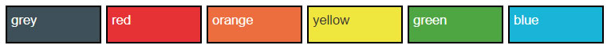
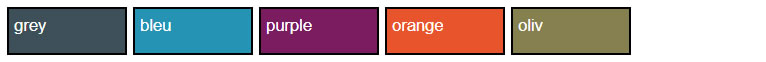
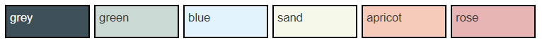
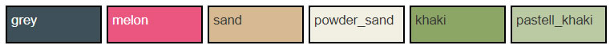
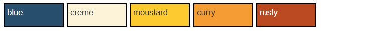
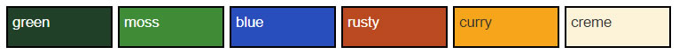
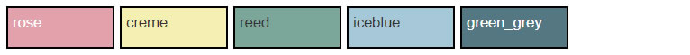

Ein Ausstellungsprojekt in die Wege leiten¶
Wenn Sie Interesse haben, eine virtuelle Ausstellung mit DDBstudio zu realisieren, kontaktieren Sie bitte das Team der Deutschen Digitalen Bibliothek unter ddbstudio@deutsche-digitale-bibliothek.de.
Nachdem Sie mit den Mitarbeiter*innen der DDB alle inhaltlichen, rechtlichen und organisatorischen Fragen geklärt haben, richten diese Ihnen eine eigene Omeka-Instanz ein, in der Sie dann Ihre Ausstellung selbständig kuratieren können.
Für diesen Schritt sind einige Festlegungen zu treffen, die zum Teil nachträglich nicht geändert werden können (mit fix gekennzeichnet):
- Titel der Ausstellung
- Untertitel der Ausstellung
- Pfadangabe der Ausstellung (fix)
- Farbpalette (fix)
Die Pfadangabe (Slug) der Ausstellung legt den Teil der URL auf der Plattform der Deutschen Digitalen Bibliothek fest, der Ihre Ausstellung kennzeichnet. Damit Ihre Inhalte von Suchmaschinen gut gefunden werden können und Sie einen nutzerfreundlichen Link zum Teilen und Verschicken haben, sollten Sie ein möglichst knappes aber aussagekräftiges slug wählen, z.B. „figurenuhren“. Erlaubt sind nur Kleinbuchstaben und Ziffern, Wörter werden durch einen Bindestrich getrennt.
Farbpaletten¶
Die Farbpalette legt fest, welche Kombinationen aus Hintergrund- und Textfarben Ihnen in der Ausstellung zur Verfügung stehen werden. Sie müssen selbstverständlich nicht alle Optionen nutzen, die eine Palette bietet. Oft wird es sinnvoll sein, die Ausstellung mit 2 oder 3 der in einer Palette angebotenene Farbkombinationen zu gestalten. Die folgenden Hinweise zum möglichen Einsatz der jeweiligen Palette sind lediglich als Anregungen zu verstehen.
Zur Auswahl stehen sieben Paletten aus aufeinander abgestimmten Farbwerten:
Palette a¶
Sehr buntes, poppiges Farbschema. Möglicher Einsatz: Popkultur, Kinder, Sommer, Zirkus, große Formen …

Palette b¶
Gedämpft komplementäres, extravagantes Farbschema. Möglicher Einsatz: Nachtleben, Süden, Adel, Mode, Nahrung/Kochen, …

Palette c¶
Dezentes, pastelliges Farbschema. Möglicher Einsatz: Sach- und Wissenschaftsthemen mit dezenter Hintergrundgestaltung, Technik, Kosmetik, Schnee und Eis, zarte und feingliedrige Objekte, …

Palette d¶
Erdiges Farbschema mit Kontrast. Möglicher Einsatz: Themen rund um Wald und Wiesen, Tiere, Gärten, Landschaften, …

Palette e¶
Warmes, elegantes Farbschema. Möglicher Einsatz: in Zweier-Farbkombination „creme“ plus eine weitere Farbe für viele Sachthemen mit fröhlich-warmer Grundstimmung, z.B. Ernährung, Sommer, Strand, Mode, Reisen, …

Palette f¶
Natürlich, bunte Farbpalette. Möglicher Einsatz: Sach- und Wissenschaftsthemen, Tag und Nacht, Herbst, Wald und Natur, Märchen und Sagen, …

Palette g¶
Kühlere Farbpalette in Pastell. Sachlich, unaufgeregt. Möglicher Einsatz: Winter, Eis, Wasser, Sach- und Wissenschaftsthemen mit dezenter Hintergrundgestaltung, Business, Technik …
